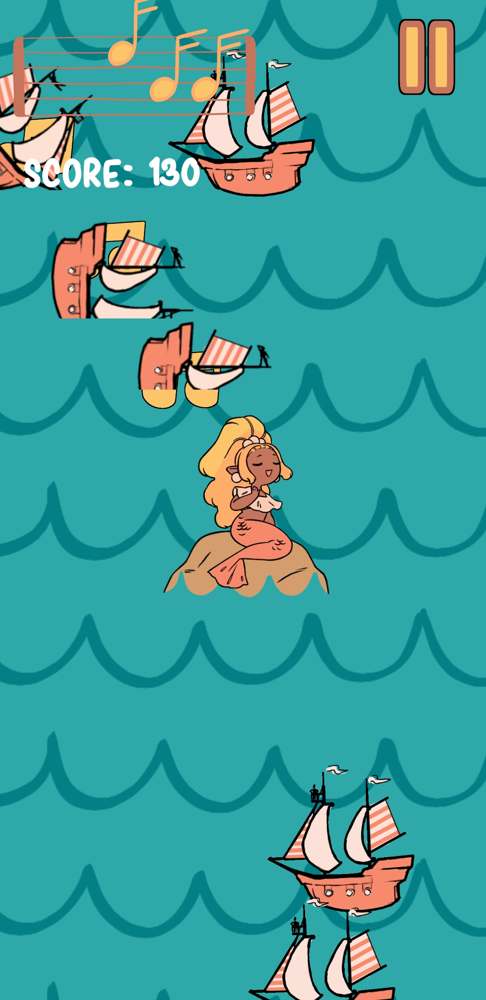
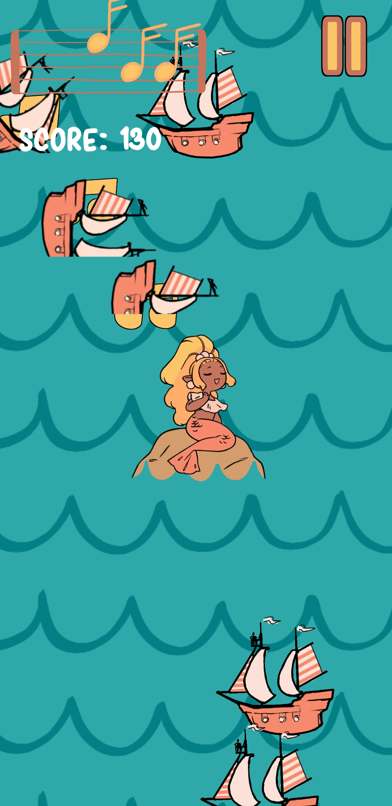

Siren Serenade
Released: July 11th 2019
Genre: Arcade
Created by: Shattered Journal Games
Role: Programmer
Engine: Unity
Team Size: 5
Installs: +100
Game Description
Midi the Siren is bored and feels like luring in sailors! Use your beautiful voice to lure them in and destroy their ships!
LURE THE SHIPS! Midi is bored and trying to find something to do! The sailors love the sound of your voice, use it to bring them in to sink their massive vessels!
SINK ALL THE SHIPS! The longer you sing for, the more sailors will come! Be careful though, if you get hit too much you won't be able to sing!!
GET THE HIGH SCORE!! Try to beat your friends! The higher your score the cooler you are, and the happier Midi is!!
My Experience
Siren Serenade's original concept started out as a whitebox my team made during the MassDiGI Summer Innovation Program (SIP) 2019. We made many whiteboxes and had to choose one to go with for the rest of the summer. We ended up going with Roller Riot which definitely worked in our favor, but most of the team still really enjoyed the concept and wanted to use it. I then organized a game jam called SIPJam so we could still make a small version of the game. I'm really glad I did, because a lot of people from SIP also made really cool games for the jam.
Links:


Screenshots
 
